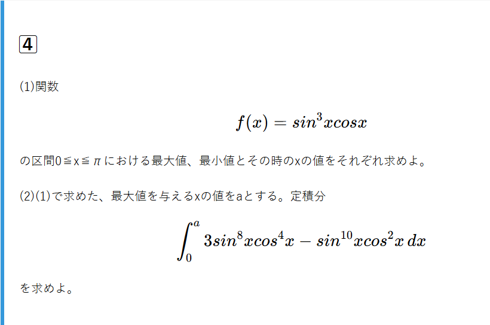

方針
(1)微分して、増減表を描く。
(2)形に注目して、変形できないか考える。
解説
(1)0≦x≦πにおける最大最小
f(x)を微分すると、 $$f'(x) = 3sin^2xcosx・cosx + sin^3x・(-sinx)$$ $$⇔f'(x) = 3sin^2xcos^2x - sin^4$$ $$⇔f'(x) = sin^2x(3cos^2x - sin^2) $$ $$ ⇔f'(x) = sin^2xcos^2x(3 - tan^2x) $$ $$ ⇔f'(x) = \frac{1}{4}sin^{2}2x(3 - tan^2x) $$ 0 < x < πにおいて、f'(x) = 0となるとき $$ x = \frac{π}{3}, \frac{2π}{3} $$ 従って、以下のよう表が得られる。
| \( x \) | \( 0 \) | \( \frac{π}{3} \) | \( \frac{2π}{3} \) | \( π \) | |||
|---|---|---|---|---|---|---|---|
| \( f'(x) \) | × | + | 0 | - | 0 | + | × |
| \( f(x) \) | 0 | ↗ | \(\frac{3 \sqrt3 }{16}\) | ↘ | \(\frac{-3 \sqrt3 }{16}\) | ↗ | 0 |
表より $$最大値\frac{3 \sqrt3}{16} (x = \frac{π}{3})$$ $$最小値\frac{-3 \sqrt3}{16} (x = \frac{2π}{3})$$
(2)定積分の計算
被積分関数を共通因数でくくると $$ 3sin^8xcos^4x - sin^{10}xcos^2x = sin^8xcos^2x(3cos^2x - sin^2x) $$ ここで(1)より、 $$ f(x) = sin^3xcosx $$ $$ f'(x) = sin^2x(3cos^2x - sin^2) $$ なので被積分関数は $$ (f(x))^2 ・ f'(x) = \frac{1}{3}((f(x))^3)' $$ 即ち式は、 $$ \int_0^a \frac{1}{3}((f(x))^3)'\, dx $$ $$ = \frac{1}{3} [(f(x))^3]_0^\frac{π}{3} $$ となる。 $$ f(\frac{π}{3}) = \frac{3 \sqrt3}{16} $$ $$ f(0) = 0 $$ なので、 $$ (与式) = \frac{1}{3} (\frac{3 \sqrt3}{16})^3 = \frac{27 \sqrt{3}}{4096} $$
重要なPoint
(2)の変形は初見では気づきにくいだろう。ただ素直に計算はできないことから(1)が誘導になっていることを選択肢の一つに持つべきである。
そこで共通因数でくくってみるとf(x)を微分した形に似たような形が出てくる。あとはf(x), f'(x)を用いて被積分関数をあらわすことで
できた式が\(\frac{1}{3}((f(x))^3)'\)であることに気付けるだろう。
被積分関数がある式の導関数であることに気付くのは経験によるものが大きい。\(e^x\)を含む式であればわかりやすいが、今回のような形は経験から似ていると察知するしかない。